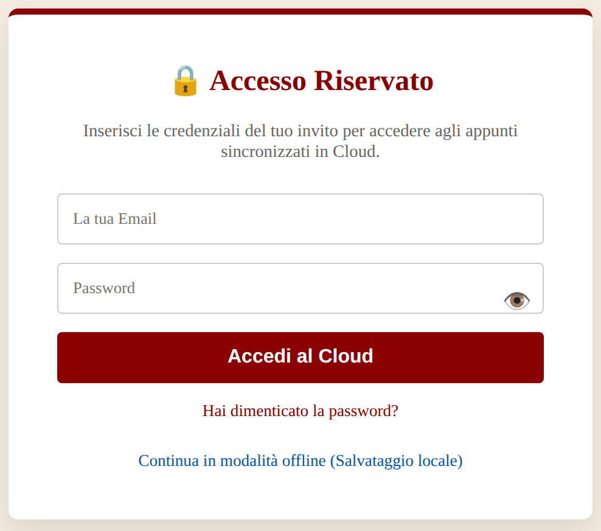
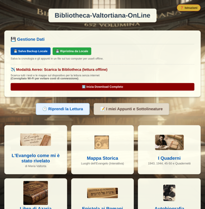
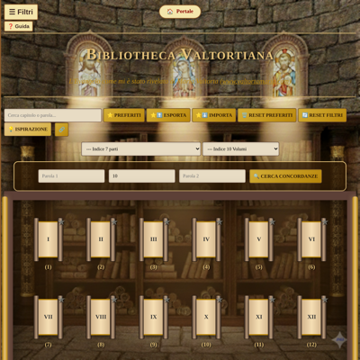
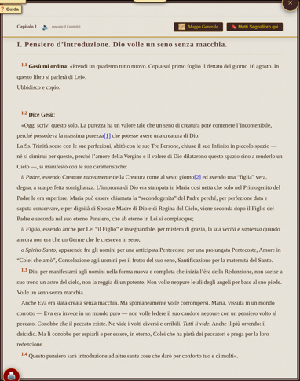
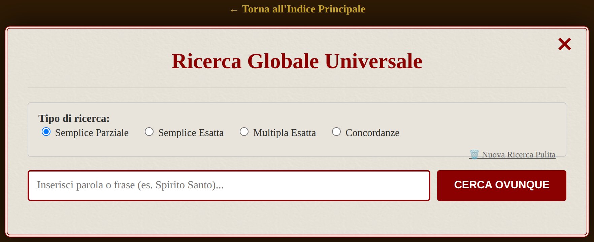
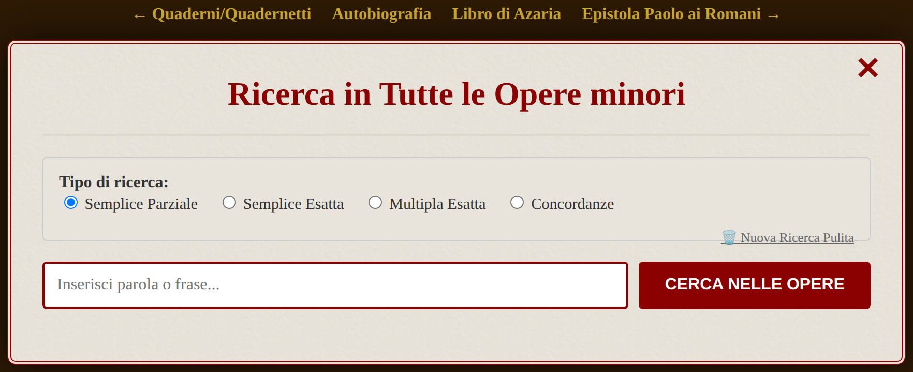
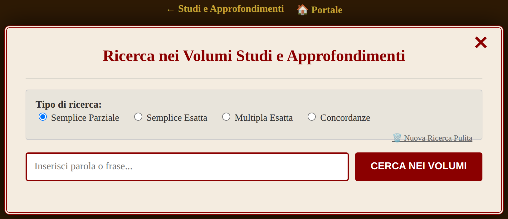
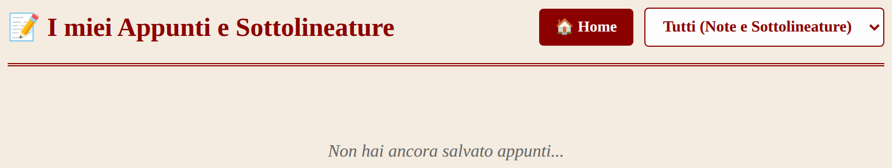
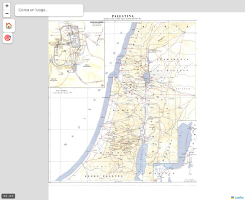

GUIDA PER L'UTENTE Bibliotheca Valtortiana On Line
Le opere di Maria Valtorta e la saggistica valtortiana in un'unica biblioteca digitale
«Prendi e leggi».
Che queste pagine digitali siano per te una porta aperta sull'Opera,
e che ogni strumento qui descritto ti aiuti non soltanto a leggere,
ma a pregare e a contemplare.
"Parole di Vita Eterna" (Quadernetti Cap. 755, 6 Gen 1949)
Una parola di benvenuto
A te che cerchi, benvenuto in questo luogo. Questa Bibliotheca non vuole essere soltanto un archivio di testi, ma un luogo raccolto dove meditare con l'opera di Maria Valtorta e con gli studi che l'accompagnano. Ogni funzione che troverai descritta — la ricerca, la sottolineatura, il segnalibro, la mappa — è pensata come un piccolo aiuto alla lectio: leggere con calma, meditare, conservare ciò che il Signore ti suggerisce nel cuore.
Non avere fretta di imparare tutto. Comincia ad aprire un'opera e a leggere; gli strumenti ti verranno incontro a poco a poco, come compagni discreti del tuo cammino di studio e di preghiera.
La Bibliotheca Valtortiana On Line è una biblioteca digitale che raccoglie l'opera di Maria Valtorta e i principali studi che la riguardano. Offre strumenti di lettura, ricerca, annotazione e meditazione accessibili da qualsiasi dispositivo, anche senza connessione a Internet.
Questa guida descrive in modo pratico tutte le funzioni disponibili, sezione per sezione.
2
Accesso: modalità Cloud e modalità locale (offline)
Il portale funziona in due modalità, selezionabili dall'utente.
☁️ Modalità Cloud (consigliata)
Inserendo le credenziali ricevute con l'invito (dalla card "Accesso Riservato"), tutti i tuoi dati — appunti, sottolineature, segnalibri, preferiti e cronologia — vengono salvati nel Cloud e sono disponibili su ogni dispositivo: computer, tablet, smartphone. Il sistema salva prima in locale e sincronizza subito con il server non appena la connessione è disponibile.
📴 Modalità locale (offline)
I dati sono conservati nella memoria del browser del dispositivo. Funziona perfettamente per chi usa un solo dispositivo. In questo caso è consigliato eseguire periodicamente un backup manuale (descritto al punto 12).
Password dimenticata. Dalla pagina di accesso, il link "Hai dimenticato la password?" permette il ripristino via e-mail.

La card "Accesso Riservato" — inserisci le credenziali ricevute con l'invito
3
La schermata principale (il Portale)
All'apertura appare il Portale, con riquadri (card) di accesso a tutte le sezioni. In alto a destra il pulsante "Istruzioni" riapre una breve guida, oltre questa, consultabile in qualsiasi momento.

Il Portale con le card delle opere e gli strumenti principali
Le sezioni principali disponibili:
Gestione Dati — backup Cloud, ripristino e, se offline, sincronizzazione locale.
✈ Modalità Aereo — scarica tutti i testi e le mappe sul dispositivo per la lettura completamente offline (consigliato in Wi-Fi per evitare costi di connessione); utile per utilizzo senza internet per un periodo continuato (aereo, montagna).
Riprendi la Lettura — riapre gli ultimi capitoli letti.
I miei Appunti e Sottolineature — raccoglie tutte le annotazioni in un unico posto.
Riquadri delle opere — L'Evangelo, la Mappa Storica, i Quaderni, il Libro di Azaria, l'Epistola ai Romani, l'Autobiografia, gli Studi e Approfondimenti, l'Archivio Volumi.
Video Presentazione e Installa App.
4
Le opere disponibili
L'Evangelo come mi è stato rivelato. L'opera principale di Maria Valtorta, con tutti gli strumenti avanzati descritti al punto 5.
I Quaderni e i Quadernetti. I Quaderni del 1943, del 1944 e del 1945–50, con i Quadernetti (preghiere e note autobiografiche).
Libro di Azaria. Commento ai brani liturgici della Messa.
Lezioni sull'Epistola ai Romani. Il dettato di Gesù sull'Epistola di San Paolo.
Autobiografia. La vita di Maria Valtorta.
Studi e Approfondimenti. La Polifonia Valtortiana (Francesco Di Traglia, 2 volumi), L'Enigma Valtorta (2 vol.), La vita di Gesù nella Storia (2 vol.) e La Madonna negli scritti di Maria Valtorta (P. G. M. Roschini O.S.M.).
Archivio e Volumi. Versione Word ipertestuale dell'Evangelo e i PDF del Poema dell'Uomo Dio, scaricabili e stampabili.
5
Lettura dell'Evangelo: strumenti disponibili
Il lettore web dell'Evangelo offre un ricco set di strumenti. L'indice si apre con lo stile "Sinagoga": i 652 capitoli sono rappresentati come rotoli, ciascuno apribile con un clic o un tocco.

L'indice dell'Evangelo in stile "Sinagoga" con preferiti, filtri e concordanze
Strumenti dell'indice
⭐ Preferiti. Contrassegna i capitoli preferiti per ritrovarli facilmente. Dal pulsante PREFERITI puoi visualizzare solo quelli segnati, esportarli (⭐⬆) e reimportarli (⭐⬇) su un altro dispositivo, oppure azzerarli (RESET PREFERITI). Disponibile solo nell'Evangelo.
Filtri tematici. Il pulsante ☰ FILTRI apre il pannello di navigazione per tema: la Passione, i Miracoli, le Parabole, i Discorsi di Gesù, la Preghiera — oppure per personaggi (San Pietro, San Giovanni, Maria Maddalena, Lazzaro, Giuda Iscariota, Maria Santissima). RESET FILTRI ripristina l'elenco completo.
Ispirazione. Propone un brano dell'Evangelo come spunto di lettura o meditazione, apribile direttamente con un clic.
Cerca capitolo o parola. Il campo di testo in cima all'indice filtra i capitoli per titolo o parola.
Cerca Concordanze. Strumento di ricerca interna all'Evangelo: inserisci due parole (Parola 1 e Parola 2) e la distanza massima in parole tra esse. Restituisce tutti i passi in cui le due parole compaiono vicine. Per ricerche approfondite utilizza la Ricerca Globale Universale (vedi punto 7).
Indici per Parti e per Volumi. I due menù a tendina permettono di navigare l'Evangelo per "7 parti" oppure per "10 volumi".
Strumenti nella barra del capitolo

La barra superiore del capitolo con tutti gli strumenti disponibili
🔖 Metti Segnalibro qui / Riprendi. Segna il punto esatto di lettura e vi ritorna con un tocco. Condivisibile. Disponibile solo nell'Evangelo (indicato in rosso nell'interfaccia).
🔊 Ascolta il Capitolo. Avvia la lettura ad alta voce tramite la sintesi vocale del dispositivo.
Mappa Generale / Mappa (Luogo Esatto). Apre la Mappa Storica direttamente dalla pagina del capitolo.
🖨 Stampa PDF. Stampa il capitolo corrente in un PDF ben formattato, ottimizzato per tutti i browser incluso Safari su iOS.
Paragrafi numerati (es. 1.1, 1.2…). Ogni paragrafo ha un identificativo per facilitare la citazione.
6
Lettura delle Opere Minori e degli Studi
I lettori web delle Opere Minori (Quaderni, Libro di Azaria, Epistola ai Romani, Autobiografia) e degli Studi e Approfondimenti (Polifonia, Enigma Valtorta, ecc.) condividono le funzioni di base: navigazione capitoli o sezioni, stampa PDF e una ricerca interna (pulsante • Cerca nella sezione).
Attenzione: segnalibro (🔖) e preferiti (⭐), con le relative funzioni di esportazione/importazione, sono disponibili esclusivamente nel lettore dell'Evangelo. In tutti gli altri libri, come in tutta la Bibliotheca, restano comunque disponibili gli strumenti di annotazione descritti di seguito.
Evidenziazioni e note personali. In tutti i libri è possibile selezionare un brano di testo: compare un menu rapido con i comandi "Evidenzia" (sottolineatura blu, come una matita sul testo) e "Aggiungi nota" (per scrivere un commento personale). Le annotazioni sono sempre sincronizzate e recuperabili dalla sezione "I miei Appunti" (vedi punto 8).
Note a piè di pagina. Presenti anche nei volumi di studio con navigazione bidirezionale (vedi punto 11).
7
I quattro livelli di ricerca testuale
La Bibliotheca offre quattro livelli di ricerca, dal più ampio al più specifico. Tutti condividono gli stessi quattro tipi di ricerca:
● Semplice Parziale
Trova tutte le occorrenze che contengono la stringa cercata, anche come parte di parola.
● Semplice Esatta
Trova solo le occorrenze che corrispondono esattamente alla parola, con confini di parola Unicode.
● Multipla Esatta
Cerca due parole distinte che compaiono nello stesso passo (es. "diceva" + "dicevi").
● Concordanze
Trova due parole a una distanza massima di N parole l'una dall'altra, rivelando accostamenti di significato.
I risultati mostrano sempre il contesto del brano; da ciascuno si può aprire il punto preciso del testo, espandere/comprimere tutte le voci e stampare l'elenco in PDF.
7.1 — Ricerca Globale Universale (tutti i libri)
Raggiungibile dal Portale, interroga simultaneamente tutte le opere: l'Evangelo, tutte le Opere Minori e tutti i volumi di Studi e Approfondimenti. È il punto di partenza per chi non sa in quale opera cercare un passo e consente di ottenere i risultati in una frazione di secondo.

La Ricerca Globale Universale — cerca in tutte le opere contemporaneamente
7.2 — Ricerca nelle Opere Minori
Disponibile dalla sezione Quaderni, cerca contemporaneamente in: Quaderni 1943, 1944, 1945–50, Quadernetti, Libro di Azaria, Epistola ai Romani e Autobiografia. I link in cima alla pagina permettono anche di navigare direttamente a ciascuna opera.

Ricerca in Tutte le Opere Minori
7.3 — Ricerca negli Studi e Approfondimenti
Cerca nei sette volumi della sezione: Polifonia Valtortiana (vol. 1 e 2), L'Enigma Valtorta (vol. 1 e 2), La vita di Gesù nella Storia (vol. 1 e 2) e La Madonna di Roschini.

Ricerca nei Volumi Studi e Approfondimenti
7.4 — Ricerca nel singolo volume
All'interno di ciascun lettore web è disponibile una ricerca circoscritta al solo libro. Nell'Evangelo è il pannello "Cerca Concordanze" (Parola 1 + distanza + Parola 2) e il campo "Cerca capitolo o parola". Nella Polifonia e in altri volumi degli Studi, come nelle Opere Minori, compare il pulsante • "Cerca nella …" con modalità analoghe.
8
I miei Appunti e Sottolineature
Tutte le annotazioni create durante la lettura (evidenziazioni e note testuali) si raccolgono qui, come in un quaderno personale. Le funzioni disponibili:
Filtro per tipo: "Tutti", "• Solo Note Testuali", "• Solo Sottolineature".
Filtro per opera, per ritrovare le annotazioni di un singolo testo.
"Vai al Capitolo ➜" per tornare al punto esatto del testo.
"• PDF / Stampa" e "• Esporta Word" per conservare o condividere il lavoro di studio.
"• Elimina" per rimuovere le voci non più necessarie.

La sezione "I miei Appunti e Sottolineature" con i filtri per tipo e per opera
9
La mia Cronologia ("Riprendi la Lettura")
Il portale memorizza automaticamente la storia di lettura (inclusa la posizione di scorrimento della pagina), così puoi riprendere con un tocco da dove avevi lasciato. Dalla card "Riprendi la Lettura" (oppure dalla sezione dedicata) si accede agli ultimi capitoli aperti in ciascuna opera.
Il sistema memorizza fino a venti consultazioni complessive.
In modalità Cloud, la cronologia è disponibile su tutti i dispositivi.
10
La Mappa Storica interattiva: sui passi del Signore
La Mappa Storica mostra i luoghi geografici citati nelle opere, su una mappa storica della Palestina ai tempi di Gesù. Funziona anche completamente offline una volta installata l'App.
Barra "Cerca un luogo…" per trovare e centrare rapidamente una località: Cafarnao, Gerusalemme, Nazareth, Betlemme, la Città di David, il monte Sion e molti altri.
Icone personalizzate per categorie di luoghi (città, luoghi sacri, acque…).
Zoom libero con i pulsanti + / −; il pulsante • (reset) riporta alla vista completa della Palestina.
Collegamento dall'Evangelo: in ogni capitolo è presente il tasto Mappa (Luogo esatto) per raggiungere il luogo dell'episodio, oppure Mappa (Generale) se il luogo non è mappato con precisione.
In modalità offline (PWA), lo zoom massimo disponibile può essere ridotto perché vengono usate le mappe cartografiche salvate localmente, ottimizzate per risparmiare spazio.

La Mappa Storica interattiva — naviga i luoghi dell'Evangelo sulla carta della Palestina antica
11
Note a piè di pagina bidirezionali
Nei volumi di Studio e Approfondimenti le note a piè di pagina sono navigabili in modo bidirezionale: il numero nel testo (es. [1]) è un collegamento che porta alla nota in fondo al capitolo; dalla nota, un collegamento di ritorno riporta esattamente al punto del testo da cui si era partiti. Questo ne rende agevole la consultazione senza perdere il punto di lettura.
12
Installare la Bibliotheca come App (PWA)
La Bibliotheca può essere installata sul dispositivo come una vera applicazione, con icona sulla schermata Home e funzionamento anche senza connessione.
🤖 Su Android e PC
Compare un pulsante di installazione; in alternativa, dal menu del browser (tre puntini) scegli "Aggiungi alla schermata Home".
🍎 Su iPhone e iPad (Safari)
Tocca il pulsante Condividi (↑) e poi "Aggiungi a schermata Home".
✈ Modalità Aereo — Download completo offline. Dal Portale, la sezione "Modalità Aereo" permette di scaricare tutti i testi e le mappe sul dispositivo tramite il pulsante "Inizia Download Completo". Dopo il download, l'intera Bibliotheca è consultabile senza alcuna connessione. Si consiglia di eseguire il download in Wi-Fi per evitare costi di connessione.
Salva Backup Cloud (Locale) / Ripristina da Cloud (Locale). Dalla card "Gestione Dati" del Portale si può esportare un file di backup di tutti i propri dati (appunti, cronologia, segnalibri) e reimportarlo in seguito o su un altro dispositivo. I salvataggi offline, se caricati quando si è online, vengono "uniti" agli archivi già presenti nel Cloud.
I dati salvati in modalità Cloud restano comunque sincronizzati quando torni online.
13
Consigli pratici
Per avere appunti e segnalibri su tutti i dispositivi: accedi sempre in modalità Cloud con le tue credenziali.
Esegui un backup locale periodicamente, specialmente se usi la modalità offline su un solo dispositivo.
Per stampare usa sempre i pulsanti interni "Stampa PDF": producono un documento ben formattato, anche su iPhone e iPad, evitando la stampa dei colori in background.
Se la pagina non mostra i contenuti aggiornati: chiudi e riapri l'App, oppure ricarica la pagina con il pulsante "Ricarica Ora" quando compare la notifica di aggiornamento.
Selezione del testo: se il menu rapido di evidenziazione non compare, assicurati di aver selezionato una sufficiente porzione di testo all'interno del corpo del capitolo.
e… ogni tanto può essere utile cancellare i cookie.